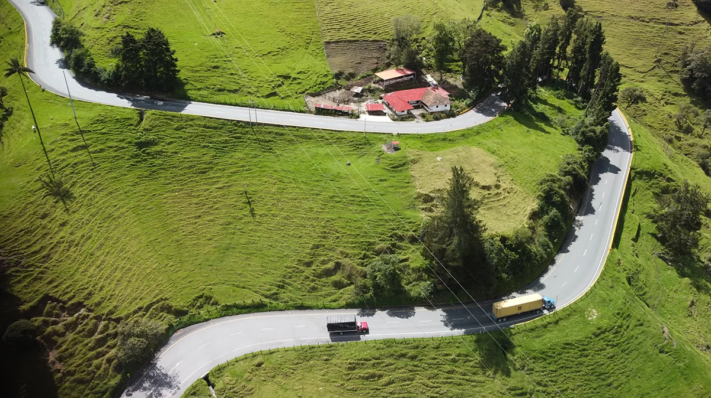
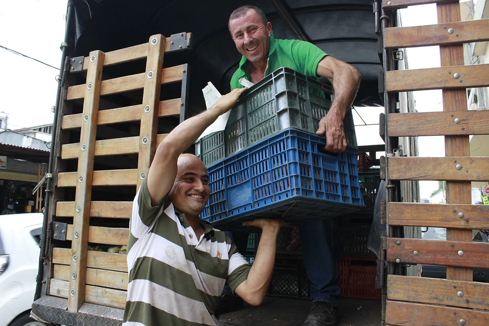
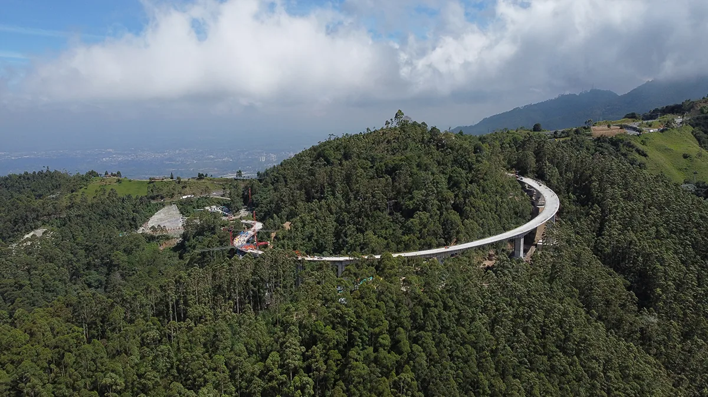

Territorio
Un país conectado desde sus territorios
Caminos del Tigre tiene alcance nacional y pone especial atención en los caminos rurales y las conexiones que unen comunidades, municipios y regiones.
Infraestructura y comunidad
Conexiones que hacen parte de la vida cotidiana




Cobertura nacional
Las necesidades reportadas se revisan de acuerdo con las condiciones y criterios del programa.
Conexiones territoriales
El programa presta especial atención a los caminos rurales y a las conexiones entre comunidades, municipios y regiones.
Acción principal
¿Tu territorio tiene una necesidad vial?
Conoce el proceso antes de ingresar a la aplicación.